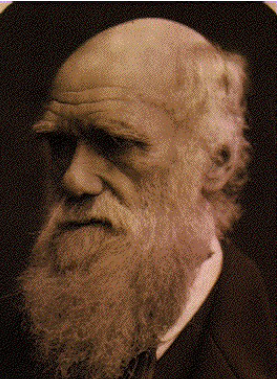
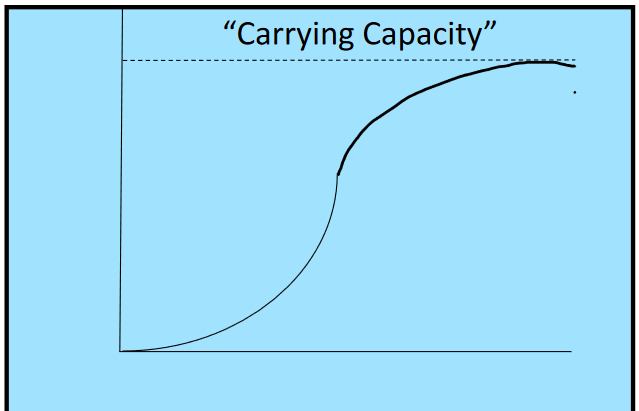
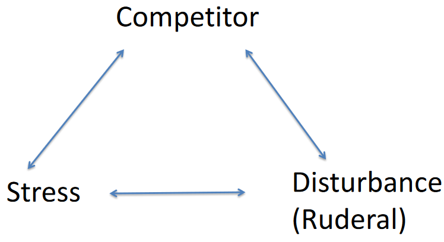
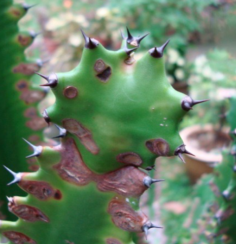
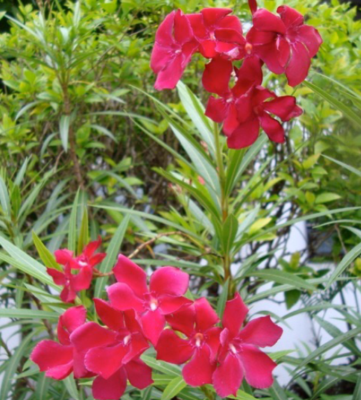
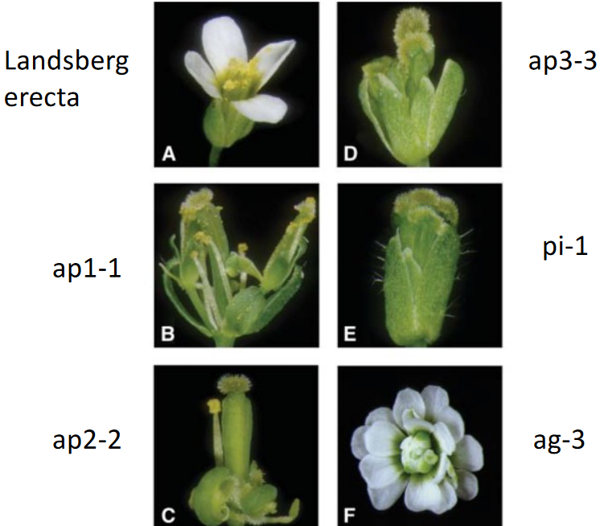

3 Plant Ecology
A field that seeks to understand the interaction between an organism and its environment.
The field that asks what determines the distribution and abundance of organisms.
– Modern Day Definition of Ecology
Ecology is just the study of our environment - it’s a word dervied from the Greek word “Oikos” (which means “house”). Nonetheless, one can also think of Ecology as the study of living organisms and their environment (which include the physical, non-living world or the abiotic factors and all the other living organisms in the environment - the biotic factors).
3.1 Darwin’s Theories
Darwin wanted to know what causes what he called “descent with modification” - what we call “evolution” today.
“…Owing to this struggle for life, any variation, however slight and from whatever cause proceeding, if it be in any degree profitable to an individual of any species, in its infinitely complex relations to other organic beings and to external nature, will tend to the preservation of that individual, and will generally be inherited by its offspring. The offspring, also, will thus have a better chance of surviving…”
– Charles Darwin
It was through these ideas that he founded the idea of natural selection - in a nutshell, these are:
- Individuals vary
- Some of these variations in 1. are rooted in genetics.
- There’s a tendency for the population of a species to grow exponentially.
- These variations in 1. may affect the ability of individuals to survive - this is called their fitness: their ability to survive and reproduce.
- Individuals that have favorable variations are live and reproduce - we say that these individuals are naturally selected.
For the man himself, Ecology was the meat of his natural selection idea. If there was nothing that to make surviving difficult, then there would be no reason for individuals to have different fitnesses and therefore, also nothing to make natural selection happen.
3.2 Plant Survival
Some current topics that Ecologists are looking into include:
- Food webs
- How energy flows in ecosystems
- Recycling nutrients
General concepts like strategies, pros, and cons from evolution also play a huge role in studying the environment, but Ecology also draws some stuff from Plant Biology - plant genotypes, development, and also their traits.
3.2.1 Limiting Factors for Plants

Plants cannot grow continuously - some limiting factors or things that limit plants and their growth include…
Abiotic factors
These include:
- Light
- Water
- Nutrients in the soil (i.e., the Biogeochemical cycle)
- The kind of soil as well
Biotic factors
- Competing for resources
- Predators
- Pathogens
- Pollinators
- Dispersing seeds
Various plants have their own ways of dealing with, if not overcoming the limiting factors, and the plants that survive are the ones who then pass on their traits to the following generation of plants.
3.2.2 Looking at Plant Competition

A person called JP Grime mentioned one way of looking at the ways that plants respond to their environments.
Competition is something that is everywhere, but is easier to see when resource needs are not being met.
Stress - on the other hand - is something that all organisms experience, is found everywhere, and associated with habitats that have extreme temperature variations (e.g., low oxygen levels, droughts, salt levels, etc).
Because there are living and non-living factors at play when it comes to plant survival strategies, scientists think that this may lead to something called convergence - that is, two unrelated organisms develop a similar set of features.
3.2.3 Dealing with Predators
Plants can deal with other organisms who want to eat them in a variety of ways, including:
Physical defenses

Euphorbia Plant’s Spiky Defenses The Euphorbia plant shown below has thorns and a super milky latex.
Chemical defenses

The Oleander Plant’s Flowers The Oleander plant is toxic to some animals. This is because the plant has something called oleandrin - this causes heart attacks in some animals.
Sap - this is sticky and can trap organisms.
Leaves that fold when they are touched - like a mimosa’s
Insects that share a good relationship with the plant - they drive away herbivores.
Though, it’s worth noting that some plants also do something else different to protect themselves - such as:
- Parasitic plants (e.g., mistletoes)
- Forming good relationships with fungi
- Carnivores
3.2.4 The Biogeochemical Cycle
There are three kinds of cycles to look out for:
Nitrogen cycle
Carbon enters the living world because of bacteria that fix nitrogen fix carbon.
Carbon cycle
Carbon enters the living world because of photosynthesis.
Phosphorous cycle
The phosphorous in rocks becomes released into the environment because of weathering events.
3.3 Pollination
Plants can have all sorts of strategies to deal with pollination - for example, specialized shapes, colors, smells, a reward system of some sort, and even what kind of nectar they have.
Though, one thing to note is that pollination can lead to one partner (i.e., either the plant or the pollinator) to be very specialized and only deal with that one kind of nectar.

A flower is something that comes from buds - a plant structure that grows shoots. All shoots have something called an axis and also attached leaves.
3.4 Dispersal
The seeds of a plant can disperse in numerous ways, including:
- Wind - this may include seeds that are propelled by “parachutes” (e.g., dandelions), “wings” (e.g., ash seeds), and “dust”.
- Water
- Ballistics
Though, in tropical forests, animals are sitll the main way that the seeds are dispersed.
3.4.1 Dispersal by Animals
There often needs to be some sort of incentive for this to happen - that is, animals don’t just disperse seeds for the sake of doing so.
And because of this, seeds often have other attributes to them that make them more attractive to plants.
Just as an example, some animals that can disperse seeds include:
- Birds
- Bats
- Primates
- Civets and other carnivores
3.5 Some Common Plant Traits
Some common traits of plants include their leaves, their wood densities, and also the mass of their seeds.
3.5.1 Primary versus Secondary Forests
A secondary forest is a portion of the local flora. A pioneer plant is a plant species that grows quickly - it paves the way for future plants to grow in.
These pioneer plants have shorter lifespans and are gradually replaced by slower growing plants (i.e., plants of primary forests).